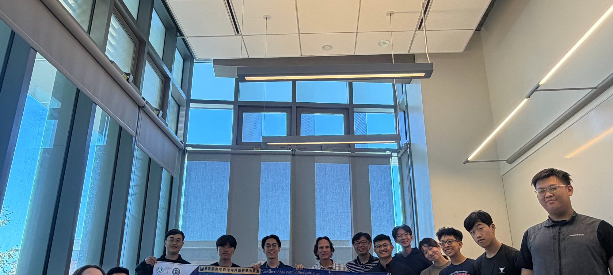
media team · D01–D60
Field Log
07 Field Log
Field log.
A photo field log of the sixty days. Weeks 1 and 2 are logged below; the rest fills in as the program continues.
state: capturing · Weeks 1–2 logged · D01–D60
Weeks 1–2 · logged
W1 · D01–D05Quantum Science, AI & Data Analytics
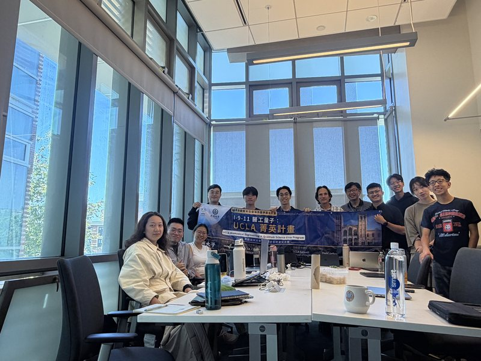
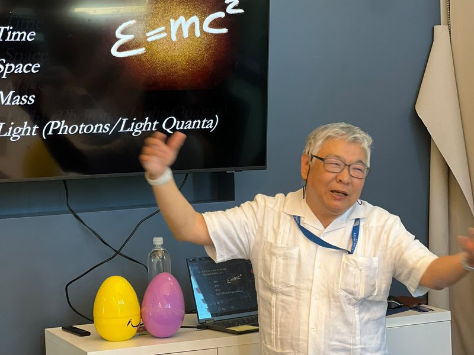
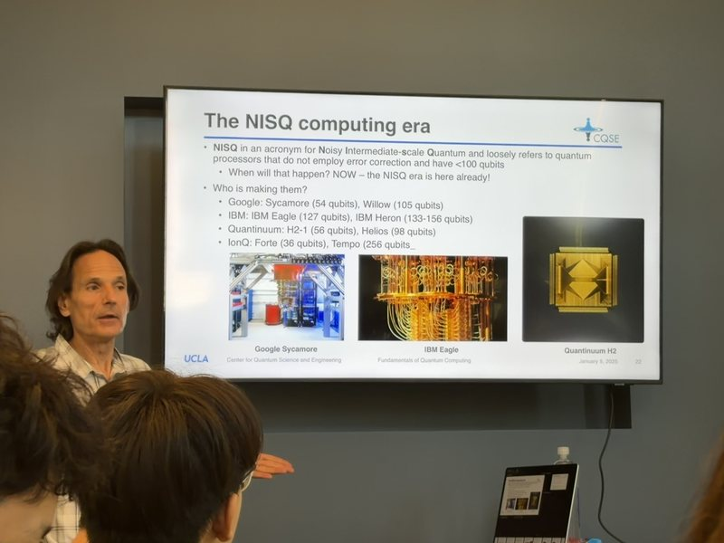
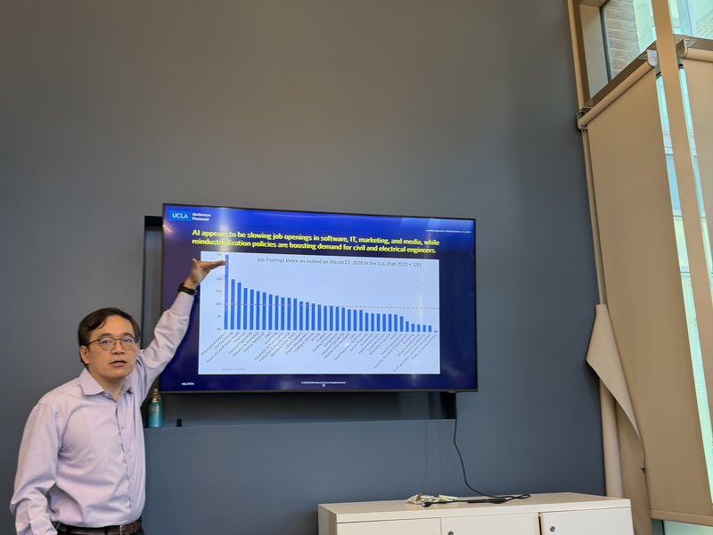
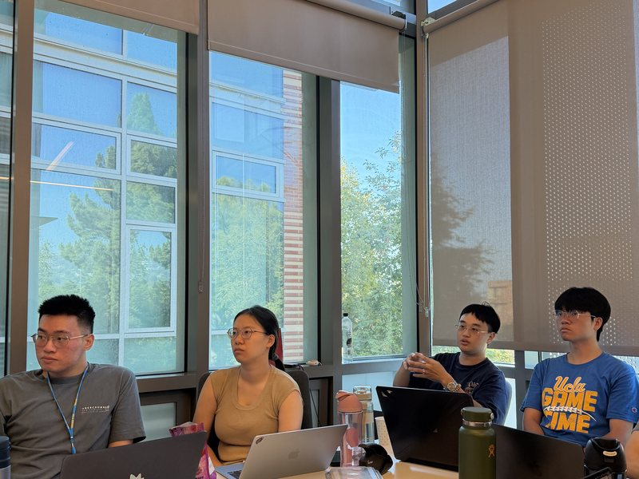
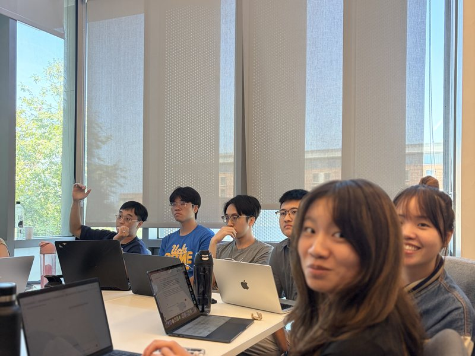
W2 · D06–D10Biology, Bioscience & Health Data
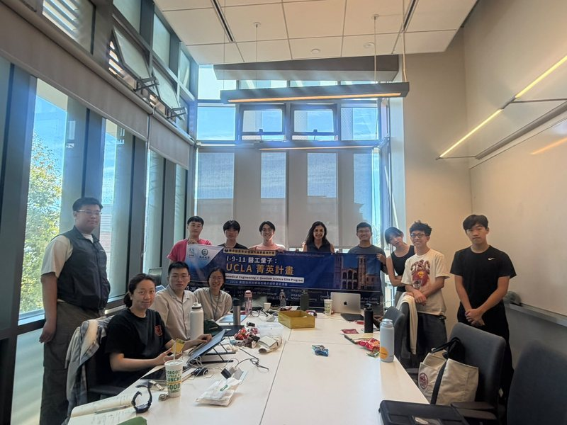
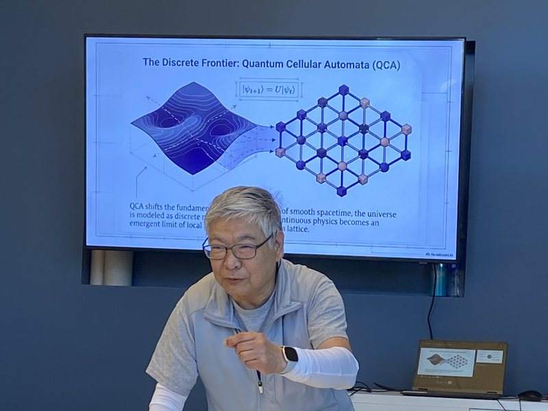
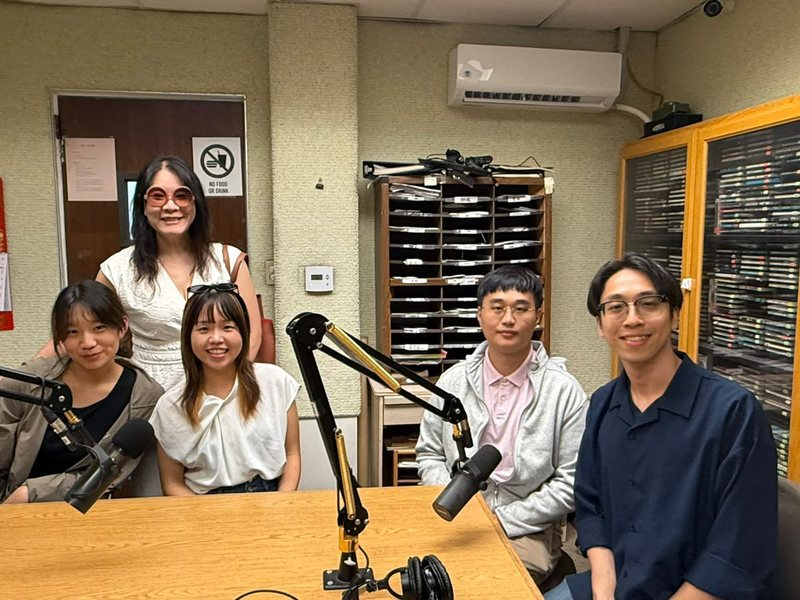
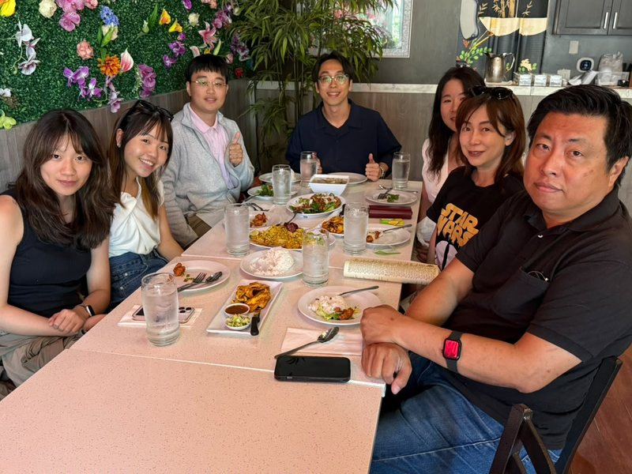
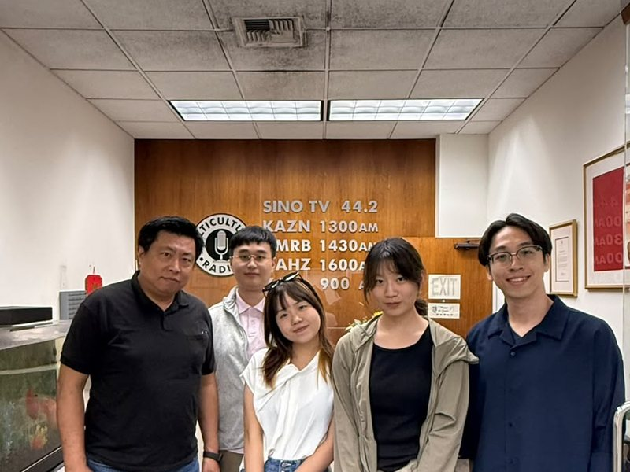
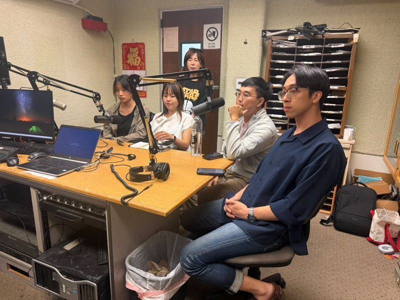
Weeks 3–9 · pending capture
W3 · D11–D15
W4 · D16–D22
W5 · D23–D29
W6 · D30–D36
W7 · D37–D43
W8 · D44–D50
W9 · D51–D60
Venues & context

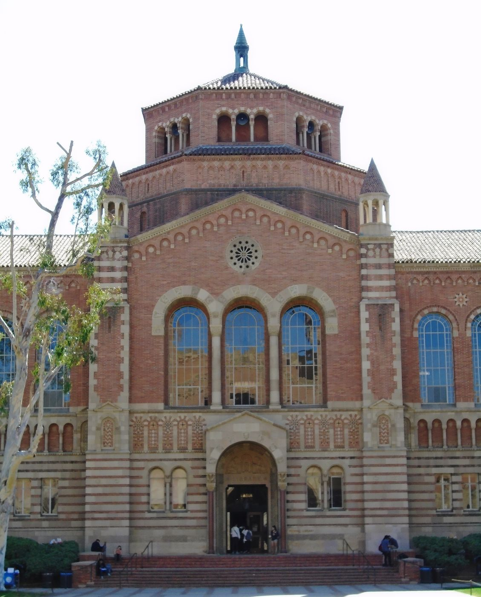

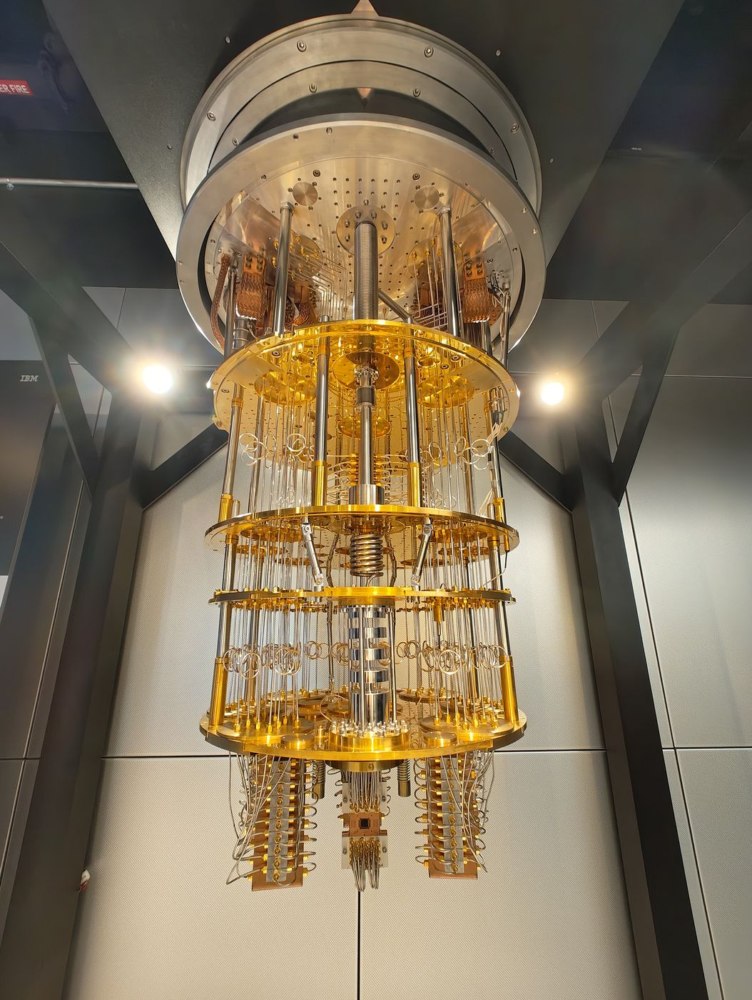